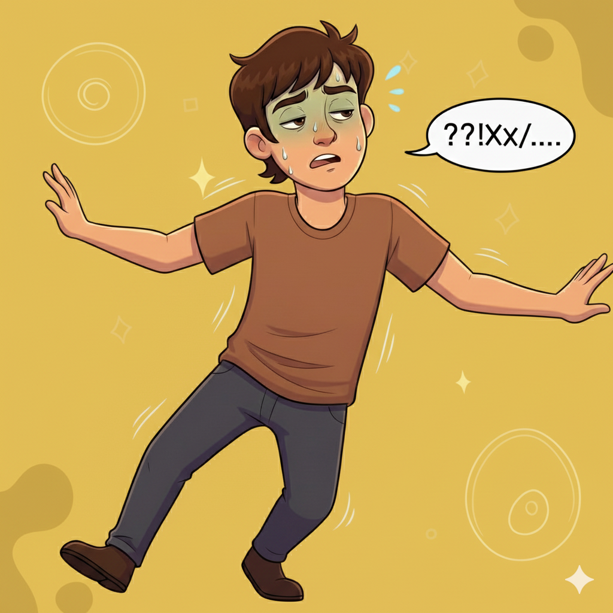
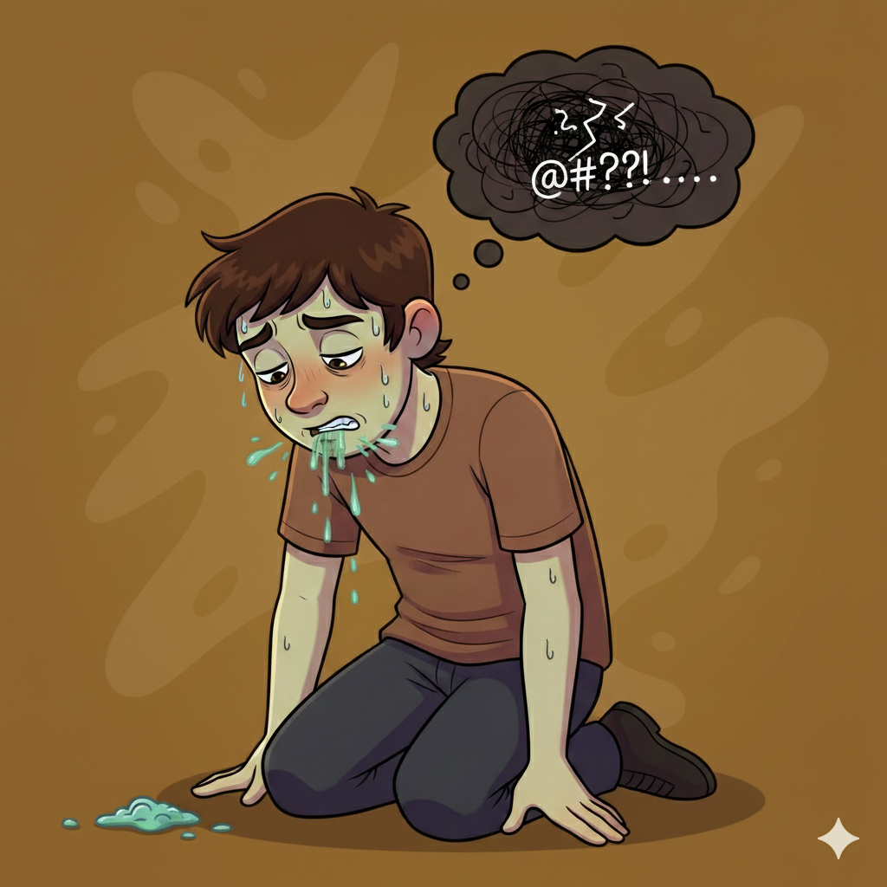
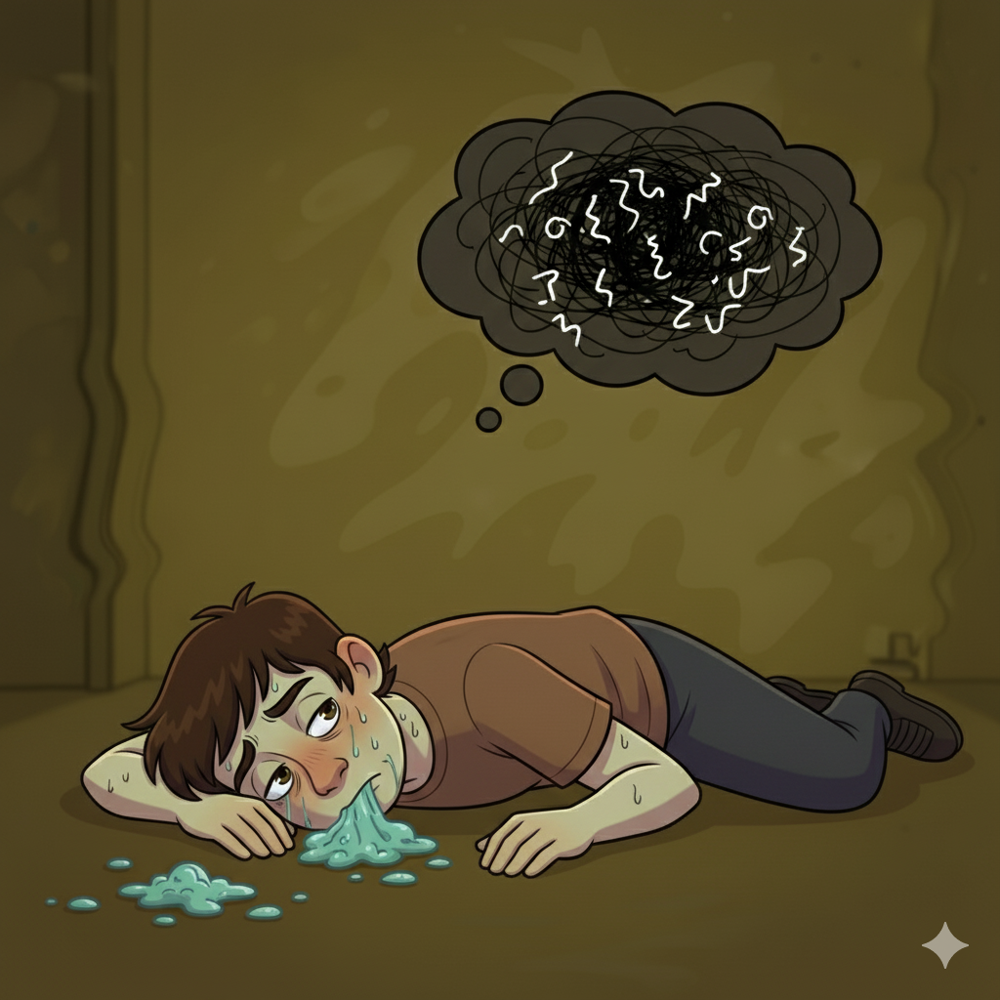

Efectos en el cuerpo del Nivel de Alcohol en sangre (BAC)
Sobrio
- Sensación de mareo leve.
- Estado de relajación y calidez.
- Alteración del humor ("subidón").
- Leve deterioro del juicio.
Relajación Inicial
- Sensación de mareo leve.
- Estado de relajación y calidez.
- Alteración del humor ("subidón").
- Leve deterioro del juicio.
0.06%
Aprox. 2-3 bebidas
🍺🍺
Euforia
- Sensación de "prendido" o "buzzed".
- Euforia y desinhibición.
- Deterioro menor en razonamiento.
- Emociones exageradas.
0.09%
Aprox. 3-4 bebidas
🍺🍺🍺
Deterioro Evidente
- Coordinación muscular deficiente.
- Deterioro del equilibrio y habla.
- Juicio y autocontrol afectados.
- Tiempo de reacción más lento.

0.13%
Aprox. 4-5 bebidas
🍺🍺🍺🍺
Legalmente Incapacitado
- Efecto depresor pronunciado.
- Deterioro motor grueso.
- Juicio y percepción severamente afectados.
- Pueden ocurrir vómitos.

0.26%
Aprox. 5-8+ bebidas
🍺🍺🍺🍺🍺
Deterioro Grave
- Fuerte estado de depresión y náuseas.
- Visión borrosa y desorientación.
- Posible pérdida de consciencia ("blackout").
- Funciones mentales y físicas severamente deterioradas.
- Poca capacidad de comprensión.
- Puede desmayarse súbitamente.

0.31% y más
Más de 8 bebidas
☠️
Riesgo Vital
- Inicio de estado de coma.
- Posible envenenamiento agudo.
- Muerte por paro respiratorio es probable.
Importante: La cantidad de bebidas es una estimación para un hombre promedio. El BAC real varía según peso, género y otros factores.